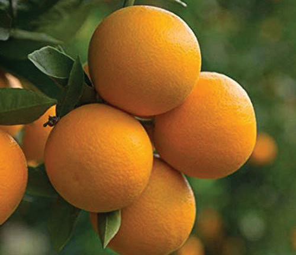
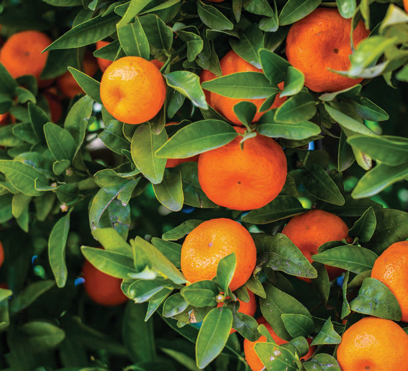
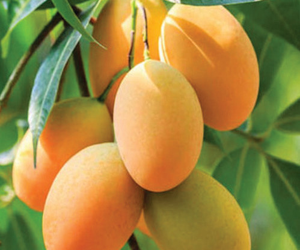
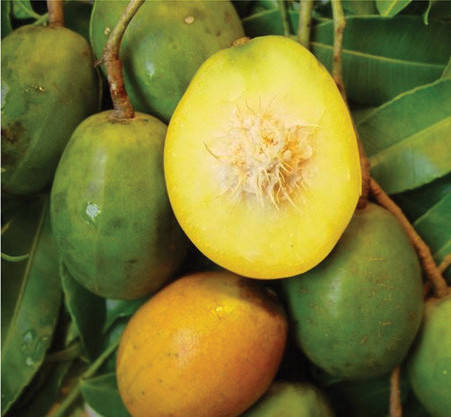

Activity 3.1
1.Categorise these vegetables based on the parts we eat such as leaves, roots, flowers, pods, seeds, fruits, bulbs, and stems.
2.Use a library and ICT tools to find out how the vegetables in Figures 3.1 to 3.22 are used and what business can be done with them.
Also, look for information about other common vegetables in your area.
3.Write a summary of what you have learnt from this activity in your portfolio.
Fruit crops
These are crops mostly with a bush-type or tree growing habit. They usually contain an edible part that holds seeds with some being seedless species. Some of these fruit crops are shown in Figures 3.23 to 3.47.



